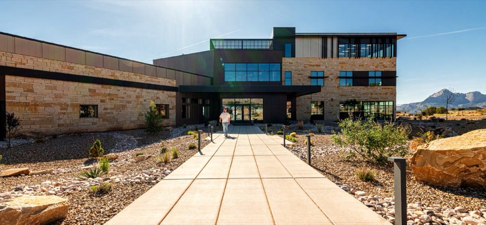
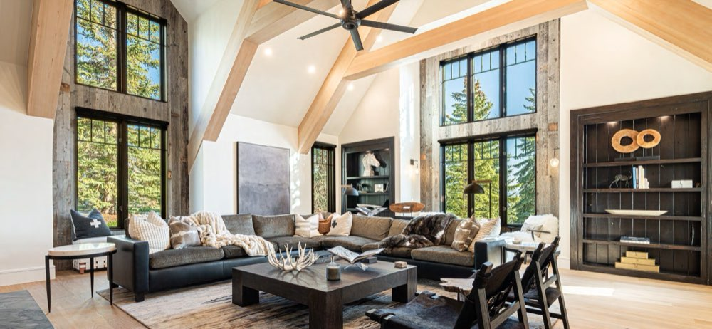
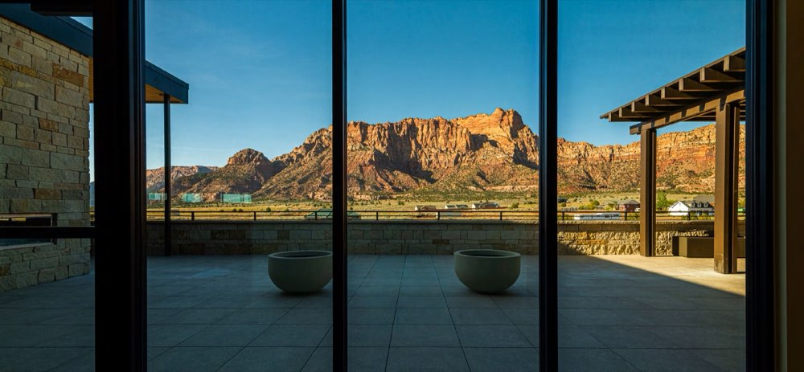
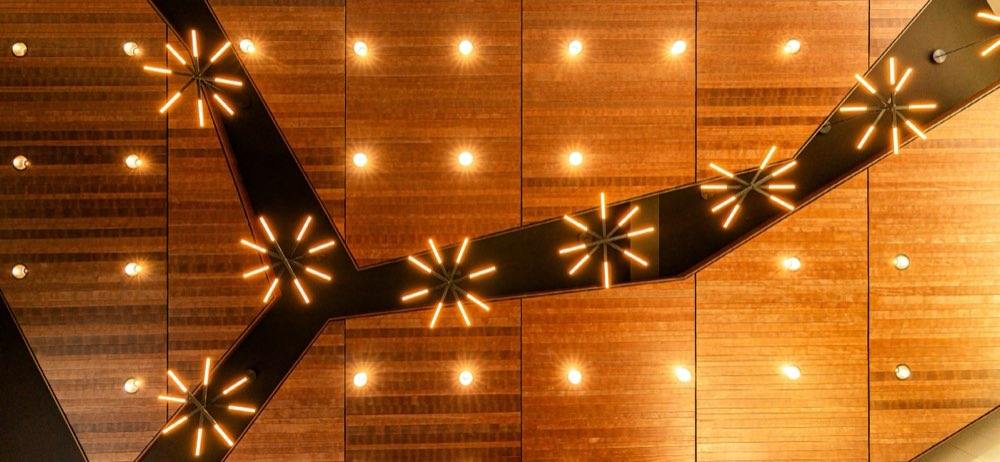

What I Deliver
Every project is approached as a visual narrative.
Rather than creating individual photographs, I create collections of images that guide the viewer through a project, from its relationship with the surrounding landscape to the details that define its identity.
Exterior photography.
Interior photography.
Aerial perspectives.
Environmental context.
Design details.
Curated image collections for marketing, publications, awards submissions, websites, and archives.
Photography is often the first encounter people will have with a project.
My responsibility is to make that encounter meaningful.

Exterior photography
Buildings photographed in relationship to their landscape and light.

Interior photography
Spaces that reveal themselves through light and atmosphere.

Aerial perspectives
Aerial views that place a project within its surroundings.

Environmental context
A project in relationship with the surrounding landscape.

Design details
The details that define a project’s identity.
Process & Tools
Every project begins with understanding.
Its purpose.
Its context.
Its relationship to light, landscape, and experience.
Careful planning, site analysis, and timing allow each photograph to contribute to a cohesive visual narrative.
I use professional imaging systems, aerial platforms, and advanced post-production workflows to achieve the highest level of quality and flexibility.
Technology, however, is only a tool.
The true value lies in knowing how to use it in service of the story.
Not only what was built.
But what remains.
How a project unfolds
- 01
Understanding
Its purpose, context, and relationship to light, landscape, and experience.
- 02
Planning
Site analysis and timing.
- 03
Capture
Professional imaging systems and aerial platforms.
- 04
Curation
Post-production into a cohesive visual narrative.
Every project is approached as a visual narrative.